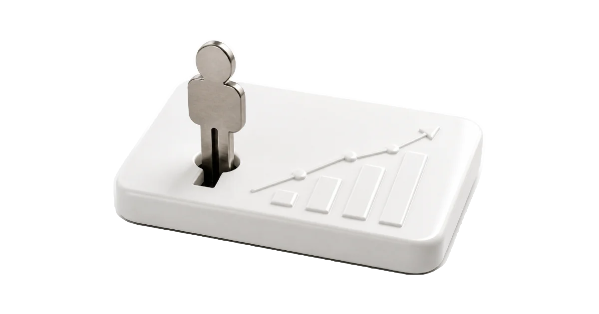
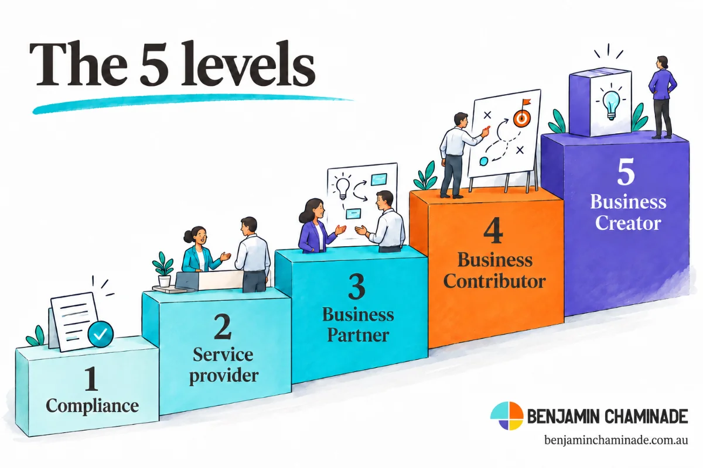

HR Design · the 5-rung ladder
The finish line
became the
starting line
Why HR business partner is giving way to business contributor.

Why HR business partner is giving way to business contributor.
The question shifts from “how engaged are our people?” to “what can they actually do, and how fast can they adapt?”
CHRO Association 2026 survey, around 150 CHROs of large US corporations.
Consumerisation of work
Arrival of agentic AI
Boards reading workforce data like the P&L
Pay transparency
Demographic renewal
Fair Work Act: employees can share their pay and ask colleagues about theirs.
WGEA starts publishing the gender pay gap of every private employer with 100+ staff.
of the ~5,000 employers in the first release showed a gap above 9.1%.
Australians aged 65+ more than double by 2062–63 (Intergenerational Report 2023).

Most functions sit between rungs 2 and 3, and aim for 4.
Talks like rung 4. Operates like rung 2 as soon as an emergency lands on the desk.
Closing that gap takes 12 to 18 months.
Responding → anticipating
Employer branding → experience architecture
Individual productivity → institutional intelligence
Engagement surveys → capability forecasting
Process owner → guardian of coherence
Audit one moment of the talent cycle: what is promised, delivered and felt.
Pick one AI experiment and turn it into a shared, documented practice.
Swap one engagement question for a capability question.
The full article includes the 20-question self‑assessment.
Full article
benjaminchaminade.com.au
/hr-partner-business-contributor
Keynote or workshop for your leadership or HR team? Send me a message.